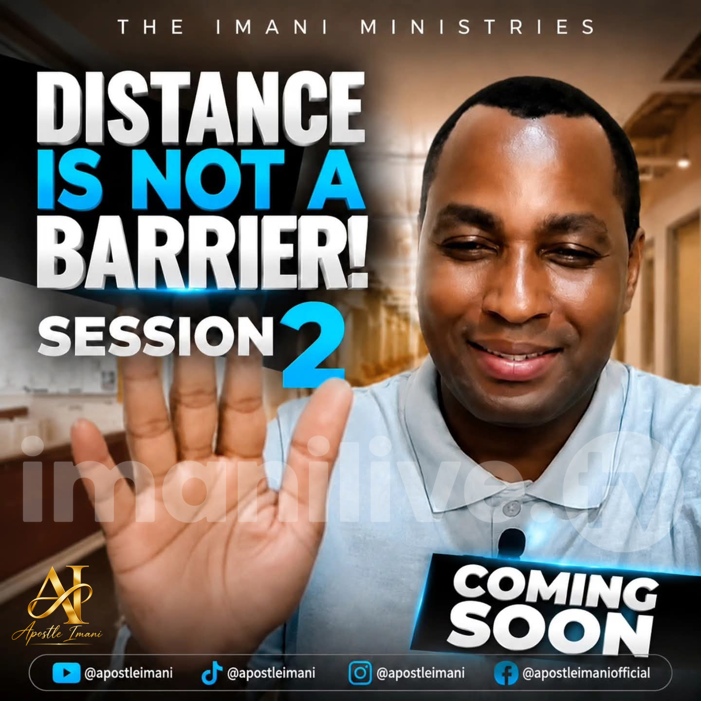
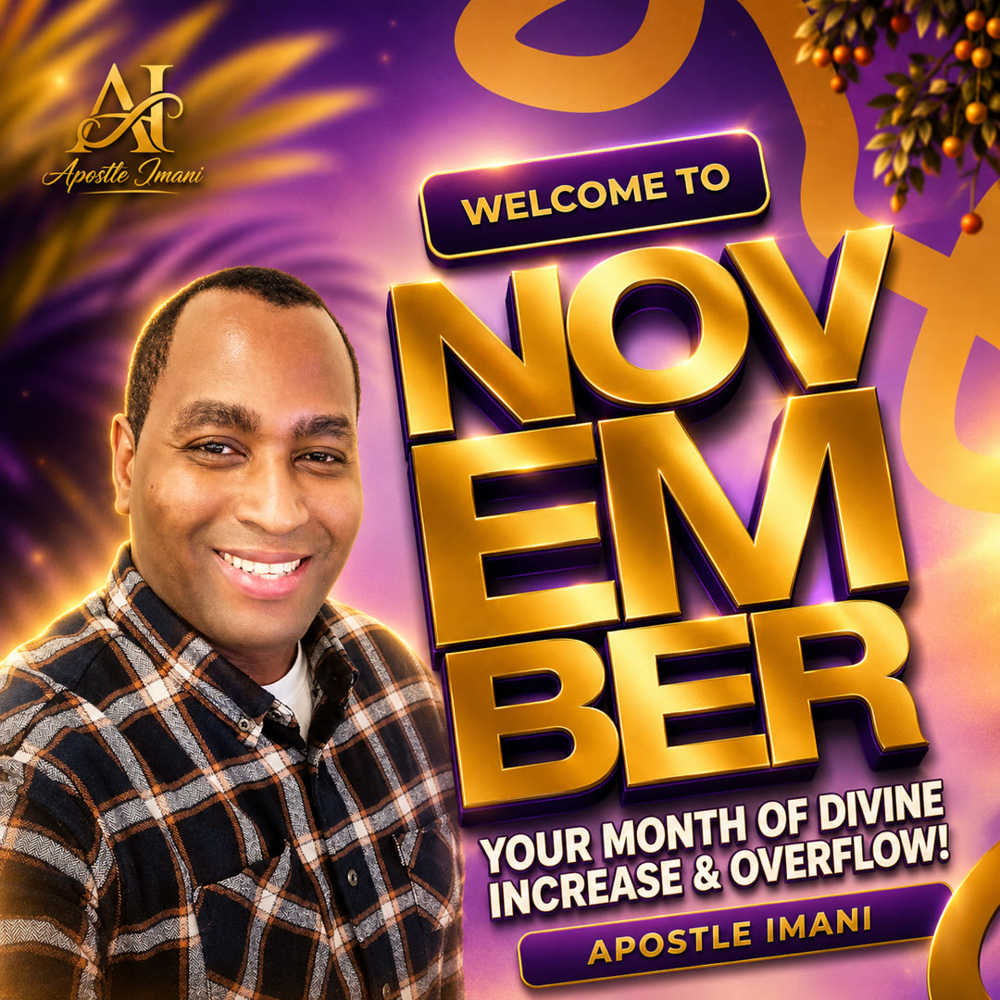
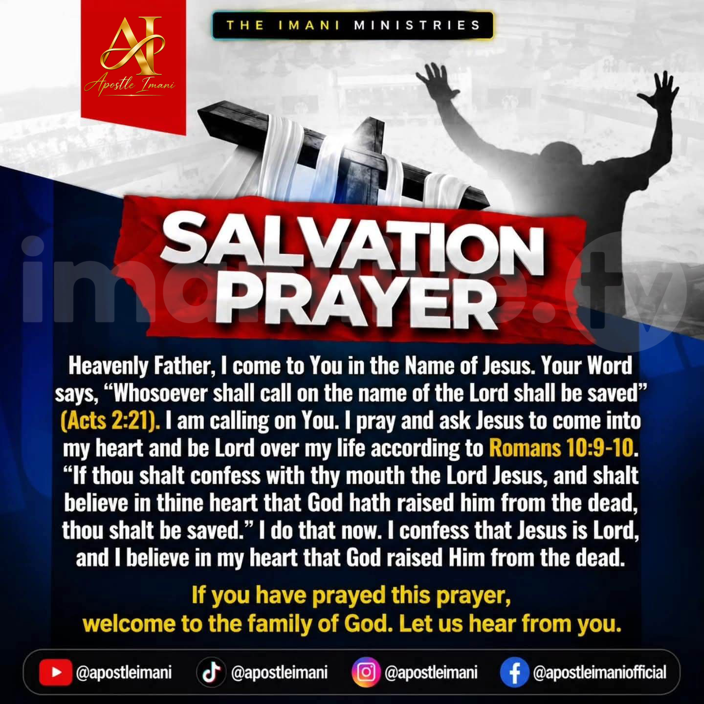

Proclaiming Christ. Transforming Lives.
A ministry of faith, revival, prayer and the Great Commission. Sharing the love of Jesus Christ and equipping believers to fulfil God's purpose.
Discover Our Ministry Link in Bio
🌍 DISTANCE IS NOT A BARRIER TO THE MOVE OF THE HOLY SPIRIT!
Get ready! A brand-new Interactive Prayer Session will soon be streamed live on our Official Facebook Page.
Please fill out and submit this form, click the link below:
👉 Register Here
Happy New Month, welcome to November!
This is your month of divine increase and overflow. Step into it with faith, and let us pray and believe together.
Request PrayerJESUS IS CALLING YOU TODAY!
🕊️ Genuine peace and lasting fulfillment flow from an encounter with your Creator.
No matter what your past looks like or what you are facing today, Jesus Christ is reaching out to you with love, mercy, and a brand-new beginning.
❤️ SAY YES TO HIM TODAY
Take the bold step to begin your journey of salvation by opening your heart to Jesus Christ.
His grace is greater than your mistakes.
His mercy is greater than your failures.
His love is waiting for you.
🙏 PRAY THIS PRAYER OF SALVATION
If you have prayed this prayer, welcome to the family of God. Let us hear from you!
🌿 YOUR NEW LIFE BEGINS NOW
One prayer of faith can change your eternity.
Jesus is waiting. Say YES to Him today! ❤️

📩 WELCOME TO THE FAMILY OF FAITH!
✨ If you received Jesus Christ as your Lord and Saviour tonight, we rejoice with you! This is the beginning of a powerful walk with God.
🤍 We would love to pray with you and walk alongside you.
📲 CONNECT WITH US
🔗 https://forms.gle/GEMq4Frq92kxMPir8
🙏 Welcome to the Kingdom of God, your new life has just begun!
Connect With UsMeet Apostle Imani
Watch the Apostle Imani intro and discover a ministry proclaiming Christ and transforming lives.
Welcome to Apostle Imani Ministries
A Christ-centred ministry committed to proclaiming the Gospel, making disciples and equipping believers for God's purpose.

Our Calling
Apostle Imani Ministries exists to proclaim Jesus Christ, strengthen believers in the Word of God, encourage prayer, multiply disciples and equip Christians to participate in the Great Commission.
Our Founder
Julius Constantine Mushi, known in ministry as Apostle Imani, is a Christian author, missionary evangelist and prophet committed to the Gospel of Jesus Christ.
The ministry journey was shaped by a season of forty days and nights of fasting and prayer in 2018, during which Apostle Imani experienced a renewed commitment to Jesus Christ, His Word, the Gospel and winning souls.
Together with friends of faith, he began the ministry journey with a commitment to serve the purpose of God and proclaim the message of Jesus Christ.
Our Vision & Mission
Serving God's purpose through the Gospel of Jesus Christ.
Our Vision
To see lives transformed through Christ, disciples multiplied, believers grounded in God's Word and Christian leaders equipped for the Great Commission.
Our Mission
To preach Jesus Christ, teach the Word of God, nurture faith, encourage prayer, develop disciples and equip Christian leaders for faithful service.
Our Foundation
Jesus Christ is the centre of our faith, the foundation of our ministry and the message we proclaim to all nations.
Mark 16:15"Go into all the world and preach the gospel to all creation."MARK 16:15
Our Ministries
Equipping believers, strengthening faith and reaching people with the Gospel of Jesus Christ.
Preaching & Evangelism
Proclaiming the Gospel of Jesus Christ and reaching people with the message of salvation.
Prayer & Fasting
Encouraging believers to grow in prayer, spiritual discipline and fellowship with God.
Discipleship
Teaching the Word of God and nurturing mature followers of Jesus Christ.
Christian Leadership
Encouraging and equipping emerging leaders for faithful Christian service.
Missionary Engagement
Supporting the mission of making Christ known among all nations.
Christian Literature
Sharing biblical truth and spiritual encouragement through Christian books and resources.
Our Statement of Faith
The biblical convictions that guide our faith, teaching and ministry.
1. The Holy Spirit
We believe the Holy Spirit worked with the Father and the Son to create the world. The Father gave His Spirit to make us like His Son, Jesus Christ. The Jesus Christ we know is Jesus in the power of the Holy Spirit. He made a wonderful promise in John 14:16-17: "I will ask the Father, and He will give you another Counsellor to be with you forever, the Spirit of Truth. The world cannot accept Him, because it neither sees Him nor knows Him. But you know Him, for He lives with you and will be in you." The Holy Spirit is to be with us forever. He is not known or received by everyone but only by those who are prepared for Him. The Holy Spirit shows us how wrong our sins are. He helps us to accept Jesus Christ as our Saviour. He completely changes our lives. This is called being converted or born again.
2. Jesus Christ
We believe Jesus Christ is a soul-winner. That is what He came for, lived for, died for and rose again for. He came to restore the relationship and fellowship between God and man. As to His human nature, Jesus Christ was a descendant of David. As to His divine nature, He was shown with great power to be the Son of God by being raised from death on the third day. Now He sits at the right hand of the throne of God (Hebrews 12:2; Romans 1:2-4). He was at all points tempted just as we are, yet was without sin. Jesus Christ loves us, died for us, reigns in power for us and still prays for us.
3. The Holy Bible
We believe holy men of God were carried along by the Holy Spirit as they spoke the message that came from God. The Holy Bible is more than long-ago events and ancient wisdom. It is God's message of grace and truth to us today (2 Timothy 3:16; 2 Peter 1:21).
4. Sin and New Life
We believe sin points one to eternal death and destruction but God's Word points one to life. If Christ Jesus is our Lord and Saviour, a new body, a new soul and a new spirit await us one day. God's Spirit joins Himself to our spirit to declare that we are God's children (Romans 8:16).
5. Salvation
We believe salvation is to be set free from sin and its penalties and is received by faith in the cleansing power of the Blood of Jesus Christ. Each man has to accept Jesus Christ as his personal Lord and Saviour, otherwise Jesus' death will not save him.
6. The New Birth
We believe God's Word refreshes our minds while God's Spirit renews our strength. To be born again, not only must we have God's Word but also His Spirit, mixed with repentance and faith in our hearts.
7. Divine Healing
We believe divine healing is the supernatural power of God bringing health to the human body. It is received by faith in the finished work of our Lord, Jesus Christ. All the punishment Jesus Christ received before and during His crucifixion was for our healing, spirit, soul and body. By His stripes, we are healed. Divine healing was included in the benefits that Jesus Christ bought for us at Calvary (Isaiah 53:5; Mark 6:13; James 5:14-15; 1 Peter 2:24).
8. Baptism and the Holy Spirit
We believe in water baptism and baptism in the Holy Spirit. We also believe in speaking in tongues as the Spirit of God gives utterance (Acts 2:4). All who enter into the number of the body of Christ do so because they are baptized in the Holy Spirit (1 Corinthians 12:13; Romans 8:9). When you are baptized in the Holy Spirit, God's power will come upon you as it did on the first disciples on the day of Pentecost (Acts 2:1-4). When God's power comes upon you, the Holy Spirit will affect everything about you. The Holy Spirit produces rivers of life, joy, love, peace and power to flow out of your spirit for the needs of others (John 7:37-38).
9. The Lord's Supper
We believe in the Lord's Supper as was celebrated by Jesus Christ and His disciples in Matthew 26:26-28: "While they were eating, Jesus took bread, gave thanks and broke it, and gave it to His disciples, saying, 'Take and eat; this is My body.' Then He took the cup, gave thanks and offered it to them, saying, 'Drink from it, all of you. This is My blood of the covenant, which is poured out for many for the forgiveness of sins.'" As the disciples of old were instructed to partake of the Lord's Supper by Jesus Christ, we also partake of the Lord's Supper (2 Peter 1:4), upon the instruction of the Holy Spirit (1 Corinthians 2:10; 11:26-31).
10. The Second Coming of Christ
We believe Jesus Christ will come again, just as He went away (Acts 1:11; 1 Thessalonians 4:16-17).
Apostle Imani Ministries | Statement of Faith
Books & Christian Resources
Explore biblical teachings, faith-building literature and spiritual encouragement by Apostle Imani.
Divine Calling
The Journey of Apostle Imani and Friends of Faith.
The Revelation of Faith
Revealing the Mystery of Faith Through Love and the Word.
Faith in Christ
To All Who Believe: The Life-Changing Power of Believing in Him.
From the Mountain to the Ministry
A journey of prayer, fasting, calling and ministry.
Media & Ministry Messages
Receive biblical encouragement, Christian teachings and ministry updates.
Connect With Apostle Imani
Find our official ministry platforms, books, social media, Christian resources and other ministry updates in one place.
Visit Our LinktreePartner With the Ministry
Join us in supporting the proclamation of the Gospel, discipleship and the work of the Great Commission.
Giving & PartnershipConnect With Us
For ministry enquiries, prayer, partnership and communication, please contact us.
Email: info@apostleimani.org
Website: apostleimani.org
Founder: Julius Constantine Mushi
Ministry Name: Apostle Imani Ministries